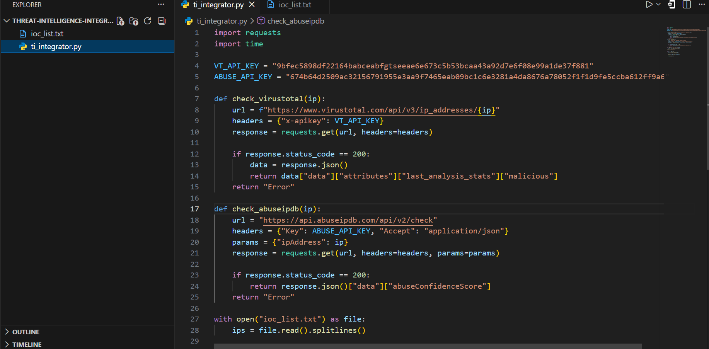
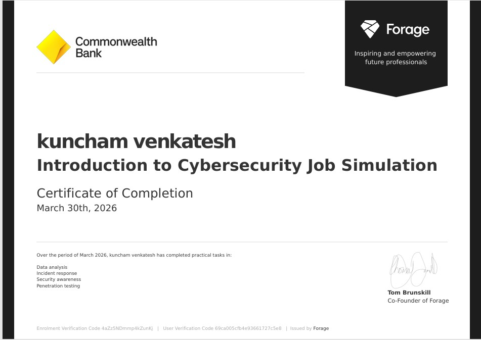
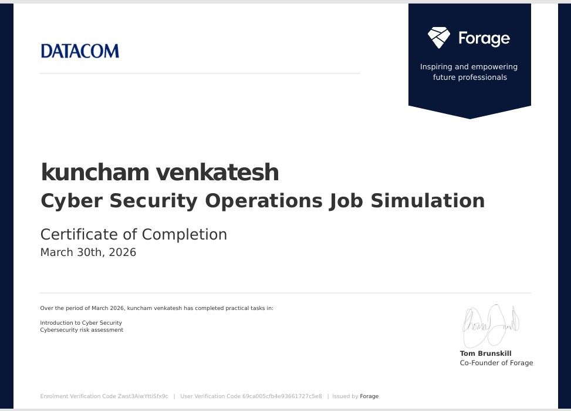
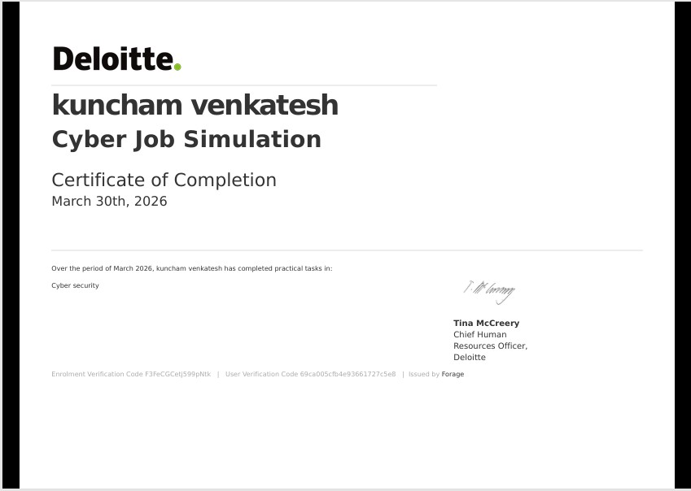
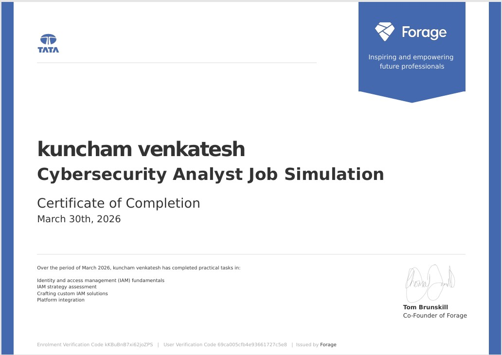

Projects
Threat Intelligence IOC Enrichment
- Developed Python-based automation to enrich IP indicators using VirusTotal and AbuseIPDB APIs
- Classified IPs as malicious, suspicious, or safe
- Handled API rate limits and large dataset processing


SSH Brute Force Detection (Splunk)
- Simulated brute force attack using Kali Linux (Hydra)
- Detected attacker IPs using SPL queries
- Built dashboards to visualize attack patterns


Wazuh Threat Hunting & Dashboard
- Analyzed security logs and alerts using Wazuh SIEM
- Detected suspicious login activity and anomalies
- Built dashboards for alert severity and trends

Web Attack Detection (Splunk)
- Analyzed HTTP logs to detect 404/500 attack patterns
- Identified scanning and abnormal traffic behavior
- Built visual dashboards for monitoring


Experience
SOC Analyst (Project-Based Experience)
2025 – Present
- Simulated SOC lab environment using Splunk, Wazuh, and Kali Linux
- Performed log analysis to detect brute force and web-based attacks
- Identified attacker IPs using SPL queries and threshold-based detection
- Built dashboards for monitoring security events and trends
- Validated malicious IPs using VirusTotal and AbuseIPDB
- Mapped attack techniques to MITRE ATT&CK framework
Data Visualization Analyst
LogomywayLLC | jan 2023 – Dec 2025
- Worked on client-based assignments focused on visual clarity & structured layouts
- Translated requirements into clean, readable visual outputs for business communication
- Applied data visualization and dashboard usability principles
- Strengthened requirement analysis, feedback handling, and stakeholder communication skills
Technology Process Analyst
SiliconIndia | Jan 2022 – Sep 2022 | On-site
- Cleaned, validated, and maintained datasets for operational reporting
- Created daily and weekly analysis,monitaring reports for internal teams
Data Visualization Associate
DesignCrowd | sep 2020 – Dec 2021
- Designed dashboard layouts and data visualization interfaces to present analytical insights clearly
- Applied data storytelling techniques to communicate insights through dashboards.
- Strengthened requirement analysis, feedback handling, and stakeholder communication skills
Certificates

Introduction to Cybersecurity Job Simulation
Cybersecurity Incident Response,Threat Analysis,Security Awareness

Cyber Security Operations Job Simulation
Cybersecurity Incident Response,Threat Analysis,SEIM,security oprations.

Cybersecurity Job Simulation
Security Incident Response,Threat Analysis,SEIM,Security Operations.

Cybersecurity Analyst Job Simulation
Identity and Access Management (IAM),Threat Detection,SEIM.
Contact
Email: itsvenkatesh555@gmail.com
LinkedIn: linkedin.com/in/venkatesh555